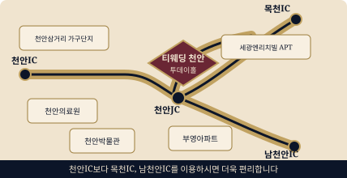

오시는 길
2026년 12월 5일 토요일 오후 1시 30분

내비게이션에 티웨딩 천안 또는
충청남도 천안시 동남구 목천읍 응원3길 27을 입력해 주세요.
세 경로 모두 세광엔리치빌 정류장에서 하차하시면 됩니다. (약 40분 소요)
- 터미널
- 24 · 400 · 500 외
- 천안역
- 동부역 출구 승차 · 24 · 383 · 400 · 500
- KTX
- 전철로 천안역 이동 후 동부역 출구 승차
대형 주차장 완비 · 대표전화 041-555-7900